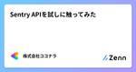

株式会社ココナラさんのフィード
https://zenn.dev/coconala
株式会社ココナラのテックブログ用アカウントです。 ココナラに所属するエンジニアが多様な記事を執筆して公開していきます。 採用情報はこちら → https://coconala.co.jp/recruit/engineer ココナラWebサイト→ https://coconala
フィード

Kotlin Fest 2024の参加レポート
株式会社ココナラさんのフィード
こんにちは。株式会社ココナラのアプリ開発グループ、Androidチームのジェレミです。今回は6月22日(土)に開催されていたKotlin Fest 2024に参加してきましたのでレポートします。 Kotlin FestとはKotlin Festは「Kotlinを愛でる」をビジョンに、Kotlin™に関する知見の共有と、Kotlinファンの交流の場を提供する技術カンファレンスです。5年ぶりにオフライン形式で開催されました。ココナラではAndroid開発にKotlinを採用しています。 参加したきっかけオンラインのカンファレンスには参加したことがありましたが、オフラインで...
1日前

「AWS Summit Japan 2024」で事例展示＋ミニステージ登壇しました！
株式会社ココナラさんのフィード
こんにちは！株式会社ココナラでHead of Informationをしている ゆーた（@yuta_k0911）です。今回は6/20（木）〜21（金）に開催された AWS Summit Japan 2024 で事例展示＋ミニステージ登壇をしました！今回はブース出展やミニステージについて、様子をお伝えします！https://aws.amazon.com/jp/summits/japan/繰り返しですが、なんとココナラがAWS Summit Japanにデビューしました！🎉今年はオフラインで3万人以上、オンラインで2万人以上の方が参加したとのことです！例年以上の参加人数で規模が...
4日前

ココナラ会計システムの話 1
1
株式会社ココナラさんのフィード
株式会社ココナラ DevOps開発グループ/業務システム開発チーム所属のもりしたです。今回はわたしのチームが主に担当している会計システムについてご紹介したいと思います。 会計システムって？ココナラにおける会計システムは大きく３つの役割を持っています。お金の動きを記録する集計情報を提供する正確性を担保するココナラスキルマーケットでの取引ごとに発生するお金の動きを会計観点で記録し、さらに取引単位（※）で記録したお金の動きを月単位で集計します。記録および集計された会計情報は経理担当が行う月次決算の業務にて正しいことを検証します。前者の２つはシステムが自動的に行いますが、...
6日前

Sentry APIを試しに触ってみた
株式会社ココナラさんのフィード
こんにちは！株式会社ココナラプロダクト開発部フロントエンドグループでエンジニアをしている maitoです。coconalaでは、フロントエンドにSentryを導入しており、日々発生するエラーについてモニタリングをしているのですが、業務の生産性を向上させるために、Sentryをもっと活用できないかと調べていたところ、APIがあることを発見し、今回試しに触ってみました。 そもそもSentryとはSentryとは、400万人以上の開発者によって利用されているアプリケーションから発生するエラーをモニタリングするツールです。 Sentry APIを実行する前の準備Sentry AP...
13日前

RubyKaigi 2024の参加レポート
株式会社ココナラさんのフィード
こんにちは！株式会社ココナラプロダクト開発部DevOps開発グループでエンジニアをしている ぽったー です。最近太ってきたので、ジムを始めようかと迷っています。今回は2024/5/15 ~ 2024/5/17に沖縄で開催されたRubyKaigi 2024に参加してきたので、その様子をレポートしたいと思います！ RubyKaigi とはRubyKaigiとは、プログラミング言語のRubyに関する世界最大規模の国際カンファレンスです。Rubyの開発者まつもとゆきひろさんをはじめ、Ruby界隈で著名な方々が多く参加されます。参加することで、Rubyの最新動向を知ることができたり...
20日前
バックエンドモニタリング改善の取り組み
株式会社ココナラさんのフィード
こんにちは。プロダクト開発部のバックエンド開発グループでエンジニアをしているゆうまです。今回はバックエンド開発グループ内のモニタリングの改善事例についてご紹介します。 いままでのモニタリング今までバックエンド開発グループでは、日別の担当者がGrafanaで作成したドメイン別のエラー率、URL別エラー発生状況、スロークエリを監視していました。しかし、定常的なモニタリングがこれのみでは、新規発生エラーやDB周り以外のパフォーマンス劣化を検知できず、対応が遅れるという課題がありました。url別エラー発生状況ドメイン別のエラー率 モニタリングの重要性の周知自分たちで開発し...
1ヶ月前
最低限のTerraformコード規約を定義した
株式会社ココナラさんのフィード
はじめにインフラ・SREチームのよしたくです。2ヶ月ほど前にTerraformの公式スタイルガイドが発表されましたね。実は同じ時期にココナラ用のTerraformコード規約を作成していたので、今回はその紹介をしようと思います。 なぜ作成したのかコード品質をあげることが目的です。実のところ、チーム内でTerraform記述の経験値はかなりバラバラであり、またもともと記載されているものもキレイな状態とは言えませんでした。そこで、最もTerraform経験のある自分が最低限の規約を整え、メンバーの実装やレビュー時に活用してもらうことで、一定のコード品質を担保できないかと考え...
1ヶ月前
24卒入社 内定者インターン バックエンド編
株式会社ココナラさんのフィード
はじめにこんにちは！プロダクト開発部バックエンド開発グループ配属になりました唐揚げ君です（このあだ名ではほとんど呼ばれていない、、）。4 月に入社してからは早いもので、もう今年の GW も終わってしまいました 🥹。実はココナラでは、1 月から 3 月までの期間で内定者に対してインターンを実施していました！今回は私がインターンを通じて得た学びや、バックエンド開発グループのインターンではどのようなことをするのかを紹介していきます！ココナラの選考を受けるか検討している人や私と同じような実務未経験でエンジニアになろうとしている人に少しでも役に立てれば幸いです！ 簡単な経歴と自己...
1ヶ月前
社内Jetpack Compose勉強会について
株式会社ココナラさんのフィード
こんにちは。株式会社ココナラアプリ開発グループ、Androidチームの藤永です。今回は、ココナラのAndroidアプリチームで取り組んでいるJetpack Compose勉強会について紹介します。 背景ココナラのAndroidアプリのUIはまだ大部分がAndroid Viewで実装されていますが、新規のUIについてはJetpack Composeで実装する方針をとっています。参考: Jetpack Compose導入時の記事https://zenn.dev/coconala/articles/0dd6b520582646その一方で、小さい開発タスクでは既存のAndroid ...
2ヶ月前
Android / iOSアプリのE2Eテスト自動化の運用保守で日々格闘しているお話
株式会社ココナラさんのフィード
こんにちは！株式会社ココナラのプロダクト開発部QA開発チーム所属のほそいです。ココナラではAppiumを使用したAndroid / iOSアプリのE2Eテスト自動化を行っております。詳しい内容は以下の記事をご覧いただければと思います。https://zenn.dev/coconala/articles/a3a5e33cd1d981https://zenn.dev/coconala/articles/a3a5e33cd1d982https://zenn.dev/coconala/articles/a3a5e33cd1d983今回は実際にE2Eテストの運用を行う上で、日々格闘して...
2ヶ月前
技術者の異常な愛情 または私は如何にして心配するのを止めてネットワーク機器を愛するようになったか
株式会社ココナラさんのフィード
ご挨拶というか、枕桜の花も散り葉桜が目につく季節となりました、いつもお世話になっております。ココナラ情報システムグループの山田志門（RTV710）です。イベントなどでは様々な方々に大変お世話になっております。さて今回の記事はどんな内容にしようかと考えたのですが、SASEの続報も、Jamf Proの話もうちのグループのメンバーが既に語ってしまっていることを考えると、ちょっと他のメンバーではあまり書かない内容がよいのではないかと思うようになりました。私が書く、書ける内容。それもうちの会社のテックブログで書ける範囲であれば、一体なんだろう？窓から見える、ライトアップされたスカイツリー...
2ヶ月前
「DevOpsDays Tokyo 2024」へ登壇しました！
株式会社ココナラさんのフィード
こんにちは！株式会社ココナラでHead of Informationをしている ゆーた（@yuta_k0911）です。今回は4/16（火）〜17（水）にオフライン・オンラインのハイブリッドで開催された DevOpsDays Tokyo 2024 へ登壇しましたので、そのレポートです！オフライン・オンライン合わせて、350名以上が参加するイベントです。https://www.devopsdaystokyo.org/スピーカーたちのページが良い感じにまとまってます！普段はDevOpsエンジニアを名乗っているわけではない私が「このイベントになぜ登壇したのか？」「どういうイベント...
2ヶ月前
内定者インターン体験記
株式会社ココナラさんのフィード
はじめにおはこんばんにちは！株式会社ココナラ新卒二期生のじんじんです！本記事では、2024年1月から入社まで参加していた内定者インターンについて、まるっともりもりお話します！！「未経験だけどエンジニアになりたい」「今度自分の会社でエンジニアを採用するけど、インターンをやる必要あるのか知りたい」といった方々に向けて、僕なりの苦労や感じたことをお伝えできればと思います。 目次自己紹介取り組むことインターン中に苦戦したこと参加してよかったことエンジニアの1日の流れに慣れることができたメンバーの雰囲気に馴染むことができた今後の意気込み終わりに 自己紹介...
2ヶ月前
登壇を通して新卒1年目を振り返ってみた
株式会社ココナラさんのフィード
株式会社ココナラのプロダクト開発部フロントエンド開発グループでエンジニアをしているのんちゃんと申します！今回は 3/19（火）に開催された Sansan 株式会社主催『23 新卒エンジニア 1 年間の振り返り LT 会』に登壇しましたので、その時の様子や登壇内容について紹介します。また、この登壇のテーマが「振り返り」ということもあり、私自身にとって新卒 1 年目を振り返る良いきっかけにもなりましたので、その際に感じた「1 番大切にしなければならない考え方」についても後半でご紹介できればと思います。https://uniquevision.connpass.com/event/3110...
2ヶ月前
24卒 内定者インターンシップ フロントエンド編
株式会社ココナラさんのフィード
ご挨拶はじめまして、ココナラ新卒2期生のはるきと申します。今回はココナラの入社前インターン(1月〜3月)の感想を記事にさせていただき、新卒エンジニアの方や就活を控えている後輩の皆さんの参考になれば嬉しいです！ 目次自己紹介/スキルセットココナラのインターンインターンでの学び率直なコミュニケーション主体性ココナラで目指すもの 自己紹介/スキルセット2024年1月から3月までの間、フロントエンド開発グループで内定者インターンとして業務し、4月より正式に新卒2期生として入社しました。情報系の四年制専門学校を卒業し、学校ではネットワーク構築やメールサーバの構築...
2ヶ月前
ココナラAndroidアプリのDIライブラリをDaggerからHiltに移行してみた
株式会社ココナラさんのフィード
株式会社ココナラアプリ開発グループ、Androidチームの長谷山です。今回はココナラAndroidアプリのDIライブラリをDaggerからHiltに移行したことをご紹介します。 背景ココナラのAndroidアプリは2018年にDaggerの導入を行いました。Daggerを使用することにより、DI(Dependency Injection)を簡単に行うことができます。ただ、Daggerはセットアップが大変だったり、学習コストが高かったり、Androidで対応するのが難しかったりという問題点があります。そこで問題点を解決するために、Daggerの上に構築されたHiltライブラリ...
2ヶ月前
24卒 内定者インターンシップ iOS編
株式会社ココナラさんのフィード
はじめにこんにちは。株式会社ココナラの第2期新卒メンバーとして4月に入社しました、じょにーと申します(アプリ開発グループ/iOSチームでは初)。本記事は『ココナラの内定者インターンシップって具体的にどんなことやってるんだろう？』と興味を持ってくださった方々に向け、1月中旬〜3月末にかけて内定者インターンシップに参加した私が詳細をご紹介していきます。 内定者インターンシップについて 概要 出勤頻度ココナラの内定者インターンシップでは、自分の都合に合わせて出勤頻度を柔軟に調整することが可能です。例えば以下のような選択肢があります。週3回以上：iOS関連技術のキャ...
3ヶ月前
WebのE2Eテスト自動化〜テストレポート編〜
株式会社ココナラさんのフィード
こんにちは！株式会社ココナラのプロダクト開発部QAチーム所属の"まる"こと鈴木です。今回は以前投稿した、「WebのE2Eテスト自動化〜ツール選定編〜」の続編に当たります。https://zenn.dev/coconala/articles/40849ff2533f84「なぜツール選定の次がテストレポート編やねん」とツッコミが聞こえてきそうですが、昨年のテスト自動化カンファレンス2023に登壇した際に、しれっと紹介したテストレポートツールへの質問が多かったので、今回はそちらに少しでもお答えできればと思い、このテーマを選びました。 テストレポートツール"reportportal"...
3ヶ月前
スロークエリ解決について
株式会社ココナラさんのフィード
こんにちは。株式会社ココナラDevOpsチームのソクです。入社1年になりました。最近、前に紹介したレガシー移行と共に既存のシステムに存在する問題解決のタスクが多いです。その中で今回はパフォーマンス改善として行っている「スロークエリ改善」を紹介します。 スロークエリデータベースで実行したクエリが基準より遅いものです。基準はそれぞれ違うはずですがココナラでは「1秒以上」かかっているクエリをスロークエリと呼びます。 なぜ解決が必要？Webサービスの品質として応答時間は大事な要素です。サーバサイド処理時間中、DBの処理時間が比較的長いし最初には問題なかったけどデータが増えると遅く...
3ヶ月前
入社直後に取り組んだAmazon ElastiCacheメンテナンス
株式会社ココナラさんのフィード
こんにちは。株式会社ココナラのインフラ・SREチームに所属しているかたぎりです。今回は私が2022年4月に入社した直後取り組んだAmazon ElastiCache（以降、ElastiCache）のメンテナンスで行ったことをご紹介します。 はじめにココナラではElastiCacheとしてRedis/Memcachedが稼働しています。基本的にCluster内でノードの冗長性が取れており、主にRedisが利用されているのですが、一部2017年に作成されたMemcachedが存在しており、作成後はあまりメンテナンスできていませんでした。 きっかけ入社翌月のある日、1件のアラート...
3ヶ月前